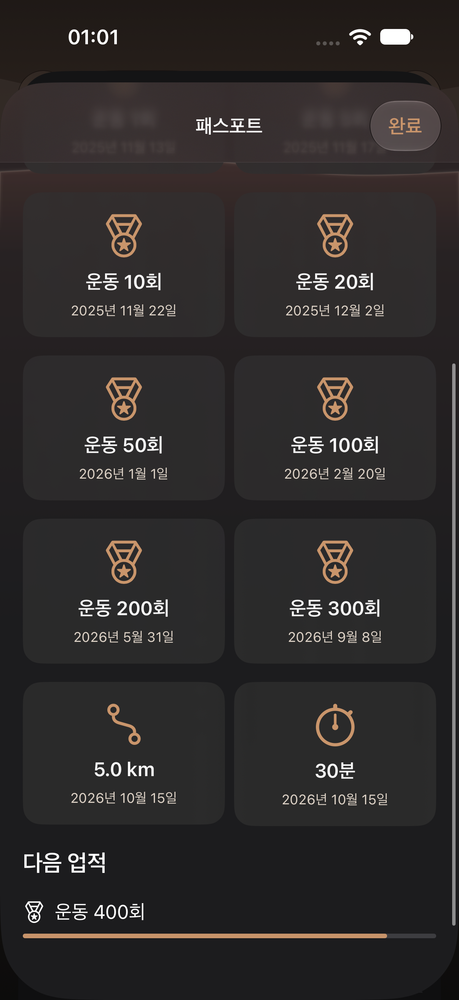
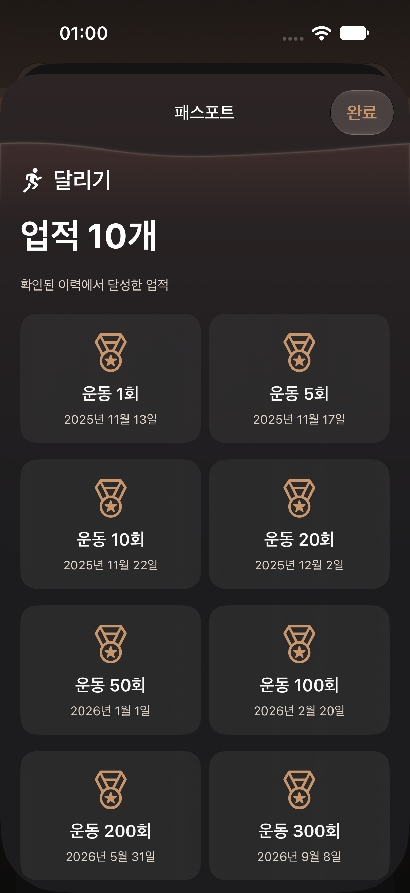

iphone · defaultCardio Atlas Passport next 400 workoutsCardioAtlasCountMilestoneUITests/testPassportShowsHundredCountMilestonesAndNextTarget()
iphone · defaultCardio Atlas Passport 200 and 300 workoutsCardioAtlasCountMilestoneUITests/testPassportShowsHundredCountMilestonesAndNextTarget()